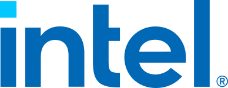

Ranglister Halvledere Intel

Intel
Et blik på de samme fund, ikke en ny score. Sådan virker det
Kort fortalt
Intel får 53: aktien er stadig dyr i forhold til egen historik, selv efter at kursen faldt ca. 28 % på én dag i oktober, da forventningerne til fjerde kvartal skuffede. Afkastet på de investerede penge er langt under finansieringsomkostningen, fabriksdelen taber penge, og aktietallet er steget 15 % på et år. Staten ejer ca. 10 % passivt, betalt med 8,87 mia. dollar i støttemidler, og kan få 5 % mere, hvis Intel ejer under 51 % af fabriksdelen, hvilket gør en udskillelse dyr for aktionærerne. Til gengæld købte direktøren aktier for ca. 9,7 mio. dollar efter kursfaldet. Hold øje med, om fabriksdelen får flere eksterne kunder.
En god forretning med et reelt spørgsmålstegn: prisen, en revne eller begge dele.
Største fradrag
- Multipler mod egen historik og peers−22
- Udvanding−7
- Margin−5
Styrker
- Insiderkøb+2
- Foundry-kunder+2
- Eksekvering i Q3+1
Sådan er scoren bygget op
Fra 100 til 53, trin for trin: point trækkes fra for forretningen, prisen og revnerne, lægges til for dokumenterede styrker, og så følger tre datajusteringer.
Hold musen over et trin eller vælg det for at se, hvad der drev det. Trin med fund åbner dem nedenfor.
Nøgletal
Pr. 24 nov. 2026. Analytikernes kursmål er ofte optimistiske; læs opsiden som et fingerpeg, ikke en prognose.
- Pris
- 56.83 USD
- Analytikernes mediankursmål
- 87.00 USD
- Opside til median
- +53.1%
- Analytikere
- 48
- Kursmålsinterval
- 63.00 – 160.00 USD
- 52-ugers ændring
- +65%
- P/E (historisk)
- n/a
- Forward P/E
- 40.8
- PEG
- 0.57
Fund
Hvert fradrag og hvert plus med sin kilde. Åbn et trin for at læse dem.
Forretning
Bliver virksomheden stærkere, ikke bare større? · 4 fund−16 af −30
- −5MarginDriftsmargin 10,3 % og bruttomargin 40,2 % TTM (7,8 % og 38,9 % ved forrige analyse); Q3 var stærk (GAAP-bruttomargin 43,0 %, non-GAAP driftsmargin 19,6 %), men Q4 guides til kun 37–38 % bruttomargin. Stadig langt fra 2021 (55,5 % og 27,9 %) og fra peers. Nettomarginen (−20 %) er forvrænget af escrow-aktiernes markedsværdi og tælles ikke.
- −5ROICROIC 4,9 % TTM (3,4 % ved forrige analyse) mod 20,4 % i 2021 og en WACC på 15,5 %. Fabrikskapitalen giver stadig langt under kapitalomkostningen.
- −3Fremtidens segment (Foundry)Intel Foundry havde et driftsunderskud på 1,85 mia. $ i Q3 (2,3 mia. $ året før) på 6,7 mia. $ i omsætning, der næsten udelukkende er intern. Den første eksterne 18A-kunde blev underskrevet i november (ikke navngivet, yield ca. 70 %), men 14A-kunder ventes først at forpligte sig midt i 2027.
- −3KapitalallokeringEmissionen i august blev 23 mia. $ (242 mio. aktier til 95 $), og 14,2 mia. $ blev brugt på at købe Apollos 49 % af Ireland SCIP (Fab 34) tilbage. Capex over 20 mia. $ i 2026; analytikerne venter FCF på ca. 0,1 mia. $ i 2026, og ledelsen venter ingen positiv pengestrøm i Q4. Kapaciteten bygges, før eksterne volumener er sikret.
Pris
Dagens multipler mod selskabets egen historik og dets sammenlignelige selskaber. · 1 fund−22 af −35
- −22Multipler mod egen historik og peersForward P/E ca. 40 mod egen forward-historik på 14–29 i 2021–24 (85 i 2025 på bundindtjening); P/S 5,3 mod 1,7–3,9 i 2021–25; P/B 2,8 mod 0,8–2,2; P/FCF 84. Kun EV/EBITDA 16,4 ligger inden for historikken (6,3–24,8). Mod peers er forward P/E klart højest (TSMC ca. 15, Qualcomm ca. 16, AMD ca. 28). Halveret siden forrige analyse (forward 69, P/S 10,7), men stadig over egen historik på næsten alle mål.
Revner
Cash flow, kunder, gæld, insidere, guidance og det, der ligger bag hovedtallene. · 5 fund−18 af −35
- −7UdvandingAktietallet er steget 15,1 % på et år og 4,0 % i seneste kvartal (emissionen på 23 mia. $, Nvidia, SoftBank, statens aktier). 132 mio. escrow-aktier til handelsministeriet var endnu ikke frigivet 26/9, og statens warrant omfatter op til 241 mio. aktier til 20 $, hvis foundry-ejerskabet kommer under 51 %.
- −5Guidance og PC-afmatningQ4-guidance på 15–16 mia. $ lå ca. 1 mia. $ under konsensus, bruttomarginen falder fra 43 % til ca. 37 %, og CFO venter PC-afmatningen (hukommelsespriser og -mangel) at fortsætte mindst i 1. halvår 2027; CCPG faldt 5 % i Q3. Aktien faldt ca. 28 % 30/10, og et søgsmål anklager Intel for at have skjult afmatningen.
- −1Driftsuheld (Israel)En ulykke på fabrikken i Kiryat Gat i midten af oktober med dødsfald og tilskadekomne standsede produktionen i ca. to uger. Intel venter kassationer, oprydning og underudnyttelse i Q4 og lavere effektivitet gennem 1. halvår 2027 og kan endnu ikke kvantificere tabet eller forsikringsdækningen.
- −3Governance og politisk risiko (statens post)Staten ejer ca. 10 % passivt og stemmer med bestyrelsen, men warranten på 5 % gør en udskillelse af foundry dyr og låser reelt strategien; Intel har selv advaret om, at statens post kan skade salget i udlandet. Demokraterne overtager Kongressen i januar 2027 og forbereder undersøgelser af handelsminister Lutnick, der forhandlede aftalerne. Escrow-aktierne giver store regnskabsudsving (tab 12,6 mia. $ i 9M).
- −2KonkurrenceAMD øgede sin andel af server-CPU'er til 35,5 % i Q3 (34,5 % i Q2), mens Intel kun vandt desktop-andele tilbage (70,1 %) i et skrumpende PC-marked (CPU-forsendelser −6,5 % år over år).
Plus
Kun dokumenterede styrker. · 3 fund+5 af +15
- +2InsiderkøbCEO Lip-Bu Tan købte 150.000 aktier for ca. 9,7 mio. $ til 64,73 $ den 2/11-2026, efter kursfaldet; han købte også for 10 mio. $ til 95 $ i august.
- +2Foundry-kunderFørste eksterne 18A-kunde underskrevet i november (ikke navngivet), Microsoft er første offentlige kunde på EMIB-pakning og har en flerårig 18A-aftale; CEO: 'I just cannot supply enough' i datacenter.
- +1Eksekvering i Q3Q3-omsætning 16,5 mia. $ (+21 %) og non-GAAP EPS 0,52 $ over guidance; DCAI voksede 78 % med 3,0 mia. $ i driftsresultat. Positivt, men opvejet af den svage Q4-guidance.
Forbehold
Det, scoren ikke fanger, eller hvor dataene er svage.
Også i Halvledere
De højeste scorer i samme branche.